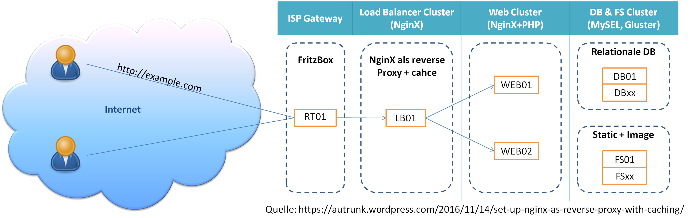

Unter IT-Struktur wird dokumentiert, wie ich mein Netzwerk und den Datenfluss für die “öffentlich” erreichbaren Teile aufgebaut habe.

Ich habe einen ganz normalen Internet-Anschluss mit einer Fritzbox und ein paar Servern (meist RaspberryPi) auf der anderen Seite.
Da sich die öffentliche IP-Adresse der Fritzbox täglich ändert, habe ich mich bei einem dynDNS anbieter angemeldet und bis so über blume.goip.de immer erreichbar.
Wie man dies in der FritzBox einrichtet und welche Einstellung zum weiterleiten nötig sind habe ich hier beschrieben.
Damit ich verschiedene Dienste oder Webseiten unter einer Domain erreichen kann, gehen alle Anfragen zunächst an einen nginx revers-proxy. Dieser leitet http Anfragen an verschiedene Server dahinter weiter. Im einfachsten fall bedeutet dass, zu Beispiel (www.blume.goip.de) eine schöne Famielen Hompage zeigt, (magic-brocoli.blume.goip.de) der Sohn seinen eigenen Blog schreiben kann und man unter (prv.blume.goip.de/urlaub2010/) die letzten Urlaubsfotos sienen Freunden zeigt.
Wie der Revers-Proxy eingerichtet wird seige ich hier.
WebCluster ist hier vieleicht etwas übertrieben, aber hier zeige ich einige Webserver und Dienste die ich verwende. Beschreibungen findet ihr hier: